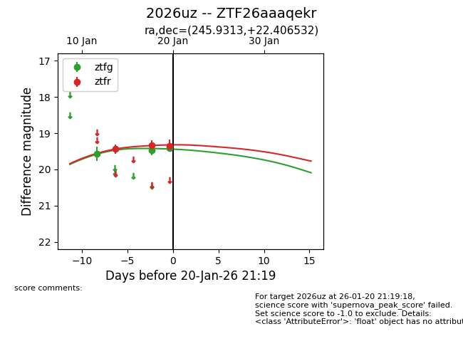
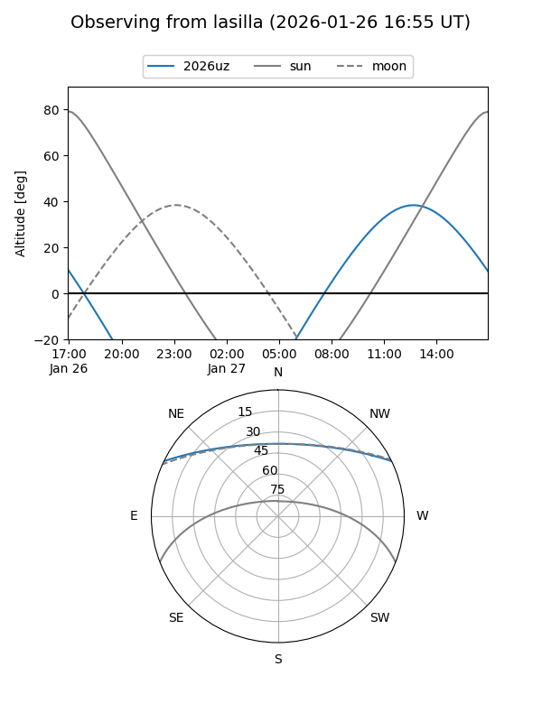
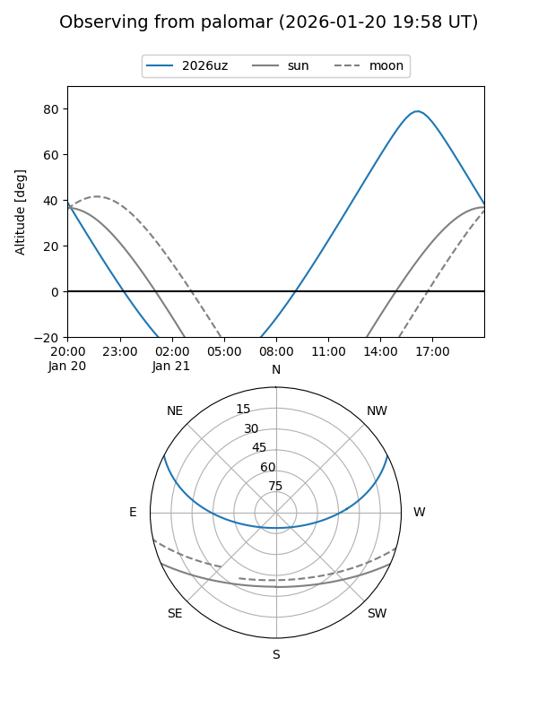
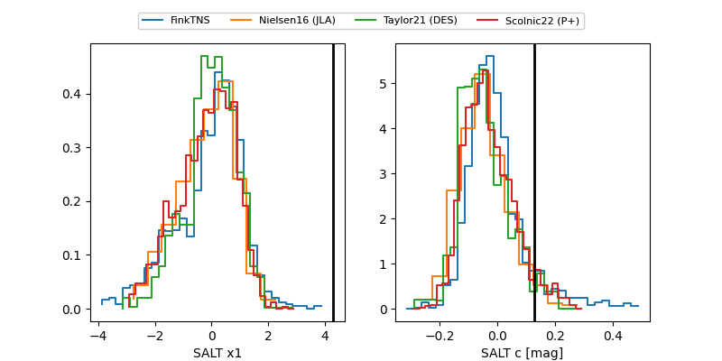

2026uz
Target 2026uz at 2026-01-14 15:10
Aliases and brokers:
FINK: link
Lasair: link
ALeRCE: link
TNS: link
YSE: link
alt names
ZTF26aaaqekr (ztf,fink_ztf)
2026uz (tns,yse)
Coordinates:
equatorial (ra, dec) = 245.9313,+22.40653
equatorial (HMS+DMS) = 16:23:43.50,+22:24:23.52
galactic (l, b) = (39.5667,+41.92501)
Flags:
Photometry:
last ztfg=19.57, ztfr=19.44
1 ztfg, 1 ztfr detections
Lightcurve

Visibility


Additional plots
